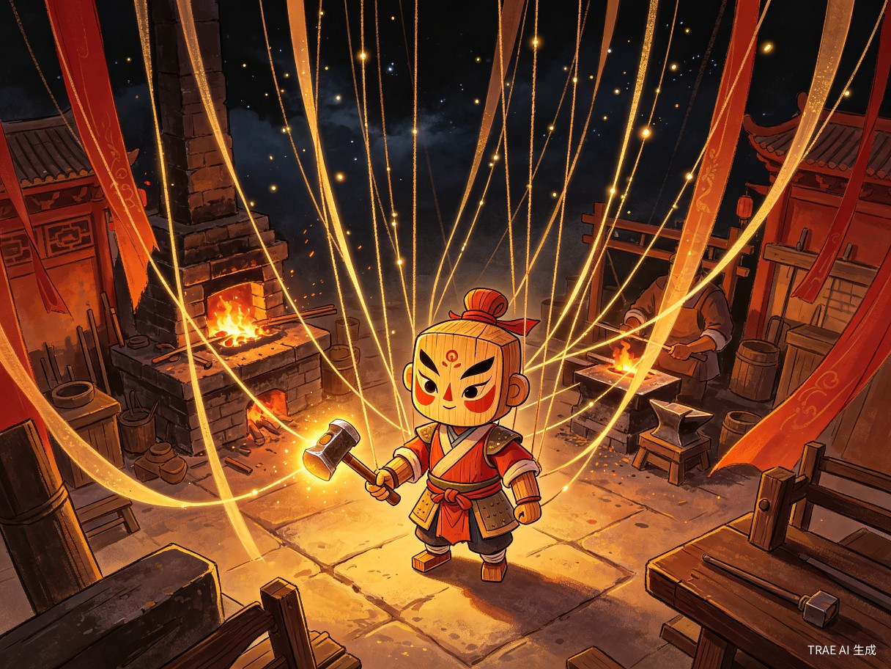
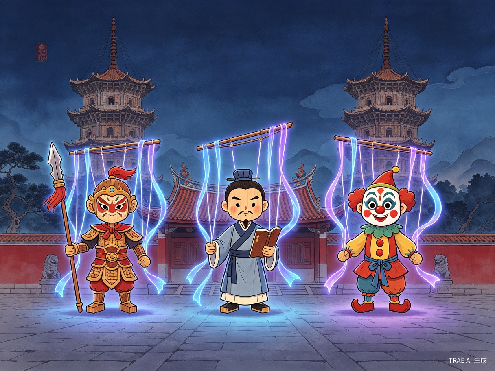
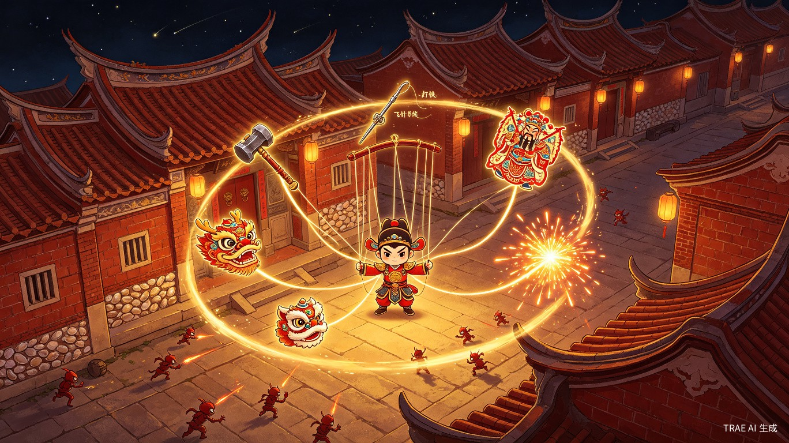
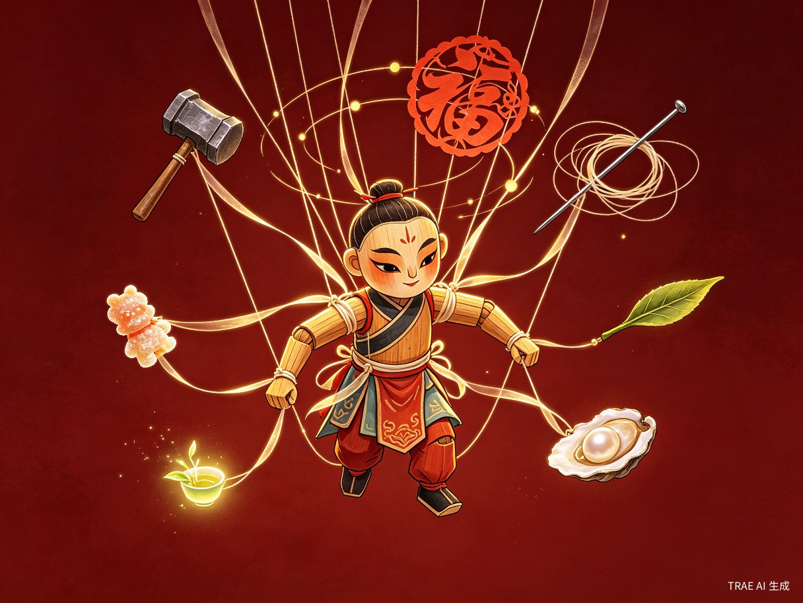
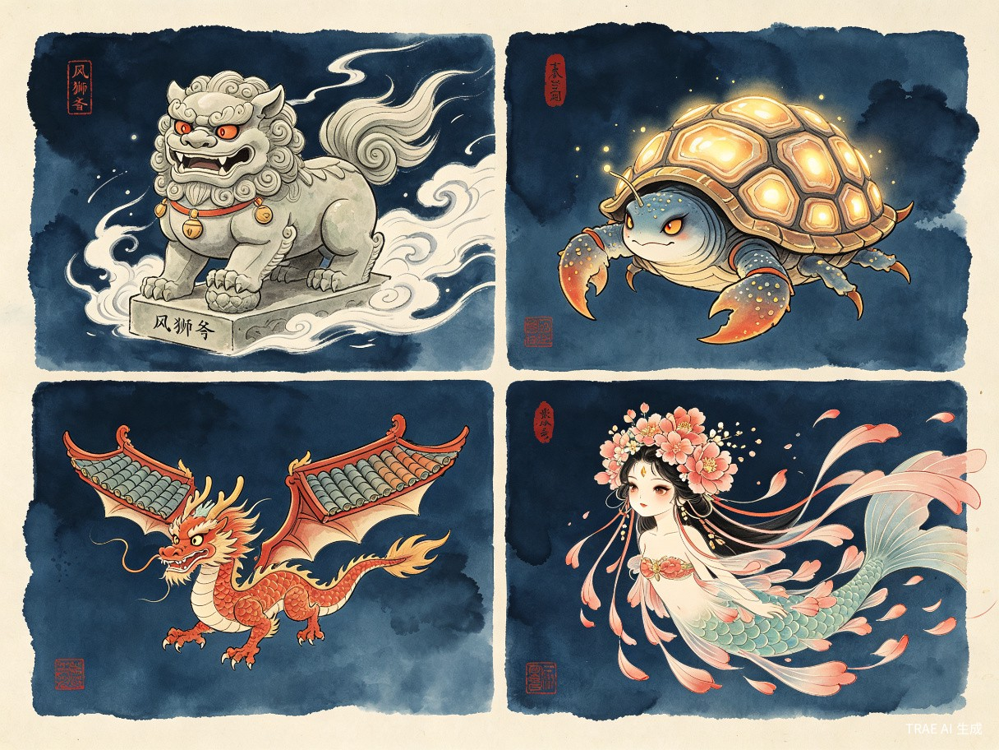
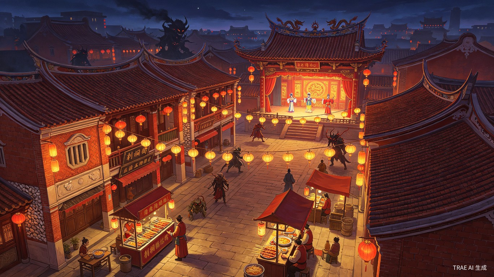
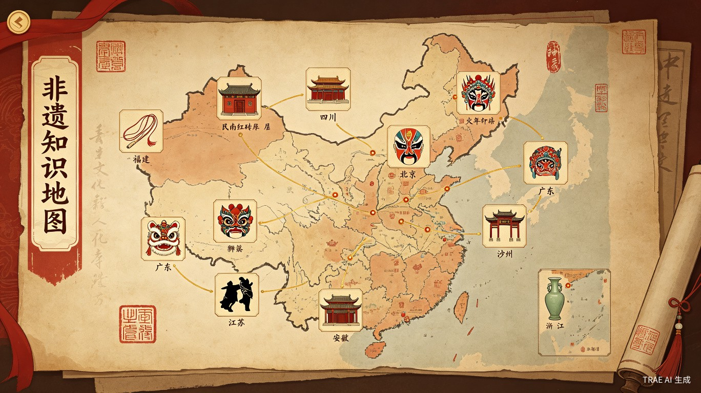

01产品概述
游戏名《锦绣未央 · 山海遗珍》——「未央」取汉乐府「长乐未央」，寓意手艺长传；「山海遗珍」直指对抗《山海经》异化的世界观。
1.1 一句话定位
玩家扮演的每一只角色，都是一只 30cm 高的提线木偶（闽南提线木偶戏国家级非遗；v1.0 也含掌中布袋木偶与铁枝木偶变体）。十二行当对应十二种非遗技艺化身——打铁匠偶、提线木偶师偶、闽南渔女偶、戏班武生偶……共同特点是：玩家 = 木偶，操作 = 拉线。6 件武器 / 技艺用品也用丝线绑在木偶身上，随角色飘浮自动攻击（Brotato 机制 + 提线木偶视觉）。用打铁花、耍木偶、提线戏、剪纸门神、茶青做青等中国非遗技艺，对抗「异化的山海精怪」，在 20-30 分钟一局中体验「以手作护国」的爽快感。每一只怪、每一把武器、每一道工序，都附带一条非遗知识——1 小时战斗 ≈ 1 份非遗通识读本。
1.2 设计理念
角色 = 木偶
玩家操作的 12 行当角色，每一只都是 30cm 高的提线木偶（或掌中布袋偶、铁枝木偶变体），被"天上的技艺化身"用丝线牵引。这是本作的最强视觉锚点，也是与 Brotato 土豆人最根本的差异。
行当即职业
12 行当对应 12 非遗门派；互通道具系统让「戏班武生偶能学打铁花」「闽南营造师傅偶能玩提线偶」。
闽南为主，全国为骨
关卡主舞台为闽南海丝古城（泉州、漳州、厦门），道具与怪物的「山海谱」覆盖全国。
在玩中学
把非遗普及做成核心机制：每只怪、每件武器、每道工序都附带一条知识。1 小时战斗 ≈ 1 份非遗通识读本（详见 13 章）。
1.3 目标用户与平台
| 维度 | 设定 |
|---|---|
| 目标用户 | 18-40 岁、喜欢 Brotato / Vampire Survivors / 黑神话 的玩家；对国风与非遗有兴趣的泛用户 |
| 平台优先级 | PC（Steam / WeGame）→ iOS / Android → 主机（Switch / PS5） |
| 输入 | 键鼠 + 手柄 + 触屏 |
| 单局时长 | 20-30 分钟（20 波 + BOSS） |
| 美术风格 | 2D 手绘 + 工笔重彩 + 闽南红砖 / 砖雕质感；非遗纹样走「工笔 + 年画 + 皮影」混合路线 |
| 难度 | 默认 1 局 1 命（Danger 0-5 递进） |
1.4 关键差异化
Brotato
角色 = 卡通土豆人；枪械 / 冷兵器自动射击；62 个差异化角色；主题：外星救援
本作
角色 = 提线木偶（每一只都是 30cm 高的提线偶 / 布袋偶 / 铁枝偶）；非遗手作动作；武器 = 丝线绑在木偶身上的"飘浮配饰"（6 件用丝线连回头 / 肩 / 臂 / 腰，自动攻击）；12 行当 × 3 流派 = 36 只木偶角色；国风工笔 / 皮影 / 年画三层美术；主题：山海异变 + 文化寻遗；独立开发者也能做（详见 14 章）
02核心玩法循环
完整继承 Brotato 验证过的「20 波 + BOSS」核心循环结构，把「射击」换成「手作」，节奏保持一致。
2.1 单局结构
| 阶段 | 内容 | 时长 |
|---|---|---|
| 拾遗开场 | 选 1 个行当 + 起始 2-3 件技艺 + 1 张地图 | 30 秒 |
| 第 1-3 波 · 启蒙波 | 基础怪、轻压力，1-2 件技艺即可应对 | 各 20-30 秒 |
| 第 4-7 波 · 匠艺波 | 怪群变密、出现小头目；解锁商店稀有 Tier 2-3 | 各 35-50 秒 |
| 第 8-12 波 · 大成波 | 怪物图鉴开启；精英怪 / 尸潮波（Danger 2+ 触发） | 各 55-60 秒 |
| 第 13-18 波 · 宗师波 | 多种敌人同屏、连击 / 弹幕最密；解锁 Tier 4 技艺 | 各 60 秒 |
| 第 19 波 | 复合精英，3-5 种敌人同屏 | 60 秒 |
| 第 20 波 · 守艺波 | 关底 BOSS + 护法小怪 | 90 秒 |
| 无尽模式（可选） | Endless Factor 指数级增长 | 无限 |
2.2 基础操作
- WASD / 摇杆：移动（推荐纯鼠标 / 摇杆移动）
- 拾遗人被动：自动释放技艺，每件技艺按各自冷却独立计时
- 技艺释放：默认自动，可选「手动释放」模式（玩家按技能键触发主技艺）
- 闪避：保留 Brotato 的「靠走位 + 短距冲刺」（冲刺 1 次 / 短冷却）
- 拾取：自动吸附范围内金币 / 灵韵 / 符札 / 道具
2.3 关键属性（升级项）
| 属性 | 含义 | 主角增益 |
|---|---|---|
| 气血（Max HP） | 生命上限 | 直接 +X |
| 回元（HP Regen） | 每秒回血 | +X / 秒 |
| 内劲（Elemental） | 元素 / 真气伤害 | +X% |
| 攻速（Speed） | 技艺释放频率 | +X% |
| 力（Damage） | 普伤系数 | +X% |
| 破甲（Armor） | 减伤 | +X |
| 身法（Dodge） | 闪避 | +X% |
| 精准（Crit） | 暴击 | +X% |
| 射程（Range） | 技艺有效距离 / AOE 半径 | +X |
| 机巧（Engineering） | 召唤物 / 工具强化 | +X% |
| 灵韵（Luck） | 稀有掉落 + 暴击 | +X |
| 拾取（Harvesting） | 灵韵拾取范围 + 数量 | +X |
| 行当 | 角色专属属性 | 因角色而异 |
| 山海 | 对山海精怪系敌人 +X% 伤害 | 解锁后全局生效 |
| 人书 | 对人型 / 阵头系敌人 +X% 伤害 | 解锁后全局生效 |
2.4 升级公式
采用「Brotato 同款公式 + 微调」：
升至下一级所需经验 = (Lv + 4)²
- Lv.1 需 25 经验；Lv.20 需 576 经验
- 每次升级：+3 Max HP + 1 次「4 选 1 升级」（可重摇）
03角色与门派系统
3.0 核心定调：每个角色都是木偶
本作所有 12 行当 / 36 只角色，没有一只"正常人"。它们都是按非遗木偶工艺制作的 30cm 提线偶、15cm 布袋偶、或 25cm 铁枝偶——被打铁师是打铁偶，闽南渔女是渔女偶，营造师傅是营造偶。这是与 Brotato 土豆人最根本的视觉差异，也是与"国风套皮"游戏最根本的差异。
① 让"非遗"从"装饰"变成"主体"——玩家操作的就是非遗本身（木偶），不是穿着非遗衣服的人；
② 视觉记忆点强——玩家第一眼就知道"这是一款中国木偶游戏"，区别于所有市面 Roguelite；
③ 丝线 / 操控杆 / 关节都可成为玩法元素：角色操控用丝线、武器也用丝线绑在身上（详见 4 章"丝线武器"），木偶与武器形成统一的"丝线美学"；
④ 死亡动画 / 升级动画 / 选角动画的"偶感"统一，是低成本建立品牌识别度的关键。
12 行当 × 3 流派 = 36 只木偶角色。每只角色都是一只 30cm 高的提线木偶（或掌中布袋偶、铁枝木偶变体），由"天上的技艺化身"用丝线牵引。12 行当对应 12 非遗门派，让"玩什么职业"= "演哪门手艺的木偶"。

3.1 门派总览（12 行当，每行当都是一只木偶）
| 序 | 行当 | 木偶类型 | 取自非遗 | 主属性 | 起始技艺 | 解锁条件 |
|---|---|---|---|---|---|---|
| 1 | 打铁匠偶 | 提线偶 | 龙泉宝剑锻制 / 打铁花 | 力 / 攻速 | 铁锤、铁花 | 默认 |
| 2 | 绣娘偶 | 布袋偶 | 四大名绣 | 攻速 / 内劲 | 飞针走线、丝线 | 默认 |
| 3 | 提线木偶师偶 | 提线偶 | 泉州提线木偶 | 召唤 / 机巧 | 单提线、双提线 | 默认 |
| 4 | 掌中木偶师偶 | 布袋偶 | 漳州布袋木偶 | 攻速 / 身法 | 掌中偶 | 默认 |
| 5 | 戏班武生偶 | 提线偶 | 京剧 / 粤剧 | 力 / 精准 | 靠旗、翎子、起霸 | 默认 |
| 6 | 戏班花旦偶 | 布袋偶 | 梨园 / 歌仔戏 | 内劲 / 灵韵 | 水袖、卧鱼 | 通关 D0 |
| 7 | 舞狮人偶 | 提线偶 | 广东醒狮 / 闽南刣狮 | 范围 / 身法 | 狮头、狮尾、采青 | 通关 D1 |
| 8 | 糖画师偶 | 提线偶 | 成都糖画 / 闽南糖人 | 内劲 / 灵韵 | 糖蛇、糖凤 | 通关 D2 |
| 9 | 剪纸师偶 | 布袋偶 | 蔚县 / 闽南剪纸 | 范围 / 灵韵 | 窗花、门神 | 通关 D3 |
| 10 | 营造师傅偶 | 铁枝偶 | 闽南传统民居营造 | 工程 / 护甲 | 红砖、出砖入石 | 通关 D4 |
| 11 | 说书人偶 | 提线偶 | 苏州评弹 / 闽南讲古 | 内劲 / 灵韵 | 醒木、琵琶 | 通关 D5 |
| 12 | 闽南渔女偶 | 布袋偶 | 蟳埔女 / 惠安女 | 攻速 / 拾取 | 簪花、蚵壳 | 累计 5k 灵韵 |

3.2 木偶类型三种：提线偶 / 布袋偶 / 铁枝偶
三种木偶对应三种非遗形态，也是三种操作手感的载体：
| 木偶类型 | 行当 | 非遗来源 | 操作手感 | 视觉 |
|---|---|---|---|---|
| 提线偶 | 打铁、提线、舞狮、糖画、说书、戏班武生 | 泉州提线木偶戏 | 动作灵活、丝线从头顶延伸至"天上的技艺化身"，可远距释放 | 30cm 高、彩绘脸、丝线 16-30 根 |
| 布袋偶 | 绣娘、掌中、戏班花旦、剪纸、渔女 | 漳州布袋木偶戏 | 动作紧凑、单手操控、近身搏斗型 | 15cm 高、戏服入掌、头戴笠帽或凤冠 |
| 铁枝偶 | 营造师傅 | 广东铁枝木偶 / 闽南铁枝戏 | 动作稳重、铁枝从背脊操控、护甲流 | 25cm 高、铁枝三根、沉稳木雕感 |
3.3 每个行当 3 流派
每个行当有 3 个「派别」变体，调整主属性 / 起始技艺 / 视觉：
例：木偶师（提线）→「丝路派」（提线为远程）、「傀儡派」（双线）、「宋江派」（多线阵法）
合计 12 × 3 = 36 个可玩角色，首发上线 v1.0 提供至少 12 个，后续 24 个在 DLC 中追加。
3.4 角色机制亮点（木偶的特殊机制）
提线木偶师偶
可以「收线」回收已召唤的提线偶自爆，造成范围伤害
戏班武生偶
靠旗、翎子按节奏触发「亮相」，5 秒内攻速 +30%
舞狮人偶
双人协同机制——狮头偶引仇恨，狮尾偶绕背输出（两只小偶协作）
糖画师偶
现场绘制糖符，糖画有「脆化」机制，被打中 5 次碎裂可重画
营造师傅偶
可临时搭建「红砖墙」「蚵壳墙」作掩体，护甲 +20 持续 4 秒
闽南渔女偶
沿海「蚵壳甲」叠加，每拾取一颗灵韵 +1% 护甲
打铁匠偶
打铁节奏连段：轻锤→重锤→淬火，三段命中触发「铁花」爆炸
3.5 木偶角色视觉规范（必读）
为保证 36 只角色都有"非遗木偶"质感，制定如下视觉规范：
| 规范项 | 标准 | 反例 |
|---|---|---|
| 角色高度 | 提线偶 30cm / 布袋偶 15cm / 铁枝偶 25cm（屏幕占比相对小） | 角色占满半个屏幕 |
| 身体材质 | 樟木雕 / 布袋 / 铁枝，可看出关节衔接 | 光滑皮肤、流体材质 |
| 脸谱 | 粉彩开脸、写意工笔；表情夸张，五官独立可动 | 写实人脸 |
| 动作语言 | 戏曲程式化动作（亮相、水袖、起霸） | 写实跑跳、拳打脚踢 |
| 丝线 / 操控杆 | 提线偶头顶 16-30 根蚕丝线；布袋偶掌中操控；铁枝偶背后三根铁枝 | 无任何外露操控元素 |
| 服饰 | 戏服、惠安女、簪花围、提线偶服；可看出布料的层次与褶皱 | 现代化服饰 |
| 死亡动画 | 木偶瘫倒、丝线松弛飘落 / 布袋偶瘫软 / 铁枝偶断枝 | 血肉模糊、爆炸 |
04武器与技艺系统：丝线武器
v0.3 关键创意更新——武器不拿在手里，而是像提线木偶一样用丝线绑在木偶人身上，飘在角色周围、自动攻击。这与 Brotato"武器飘在人身上"的设定完全一致，但又比 Brotato 更进一步：每件武器的丝线都连回角色身体的某个部位（头、肩、臂、背、腰、脚），看得见、摸得着、有非遗质感。

4.0 核心定调：武器 = 飘在身上的"非遗配饰"
本作所有 6 件武器 / 技艺用品，都不在角色手里。它们用发光蚕丝线绑在木偶角色身上——肩上一把铁锤、腰上一束飞针、背后一面剪纸门神、左手一只糖画小凤……武器随角色移动而浮动，按各自节奏自动攻击最近的敌人。这是与 Brotato "武器自动飘浮攻击"机制的视觉化升级，也是与"非遗"主题最契合的表现形式。
① 与 Brotato 机制无缝对齐：6 件武器同时自动释放，无需玩家手动瞄准，节奏完全相同；
② 视觉化"非遗木偶"质感：玩家一眼就能看出"这是一个提线木偶在操控非遗武器"，不是穿戏服的真人；
③ 丝线 = 视觉锚点：每件武器的丝线连回角色身体的特定位置，形成"角色+丝线+武器"的有机整体，这件组合本身就是非遗；
④ 玩法层面：丝线可成为升级 / 收集元素——加长丝线 = 增加武器攻击距离，加粗丝线 = 提升伤害，加亮丝线 = 提升稀有度。

4.1 武器槽位：6 件绑在身上，飘浮攻击
| 槽位 | 绑定部位 | 丝线长度 | 适合武器 | 代表行当 |
|---|---|---|---|---|
| ① 头部 | 头顶 / 帽 | 短（80px） | 小型近战 / 召唤物 | 提线木偶师偶（提线偶头） |
| ② 左肩 | 肩甲 | 中（120px） | 中型武器 | 打铁匠偶（铁锤） |
| ③ 右肩 | 肩甲 | 中（120px） | 中型武器 | 戏班武生偶（靠旗） |
| ④ 左手 | 腕 | 长（180px） | 远程投射 | 绣娘偶（飞针） |
| ⑤ 右手 | 腕 | 长（180px） | 远程投射 | 糖画师偶（糖蛇） |
| ⑥ 腰 / 背 | 腰带 / 背带 | 中（150px） | 中距 / 范围 / 召唤 | 营造师傅偶（红砖）、闽南渔女偶（簪花） |
6 槽位默认全开；特殊角色（如「提线木偶师偶」）的 1 槽被锁定为"额外提线偶"召唤位，剩余 5 槽由玩家自由搭配。
4.2 稀有度（按丝线光泽）
武器稀有度直接体现在丝线的光泽上：
| 稀有度 | 解锁波次 | 丝线颜色 | 丝线光效 | 出现概率（D5 满） |
|---|---|---|---|---|
| Tier 1（白·凡） | 1 | 米白棉线 | 无光 | 100% |
| Tier 2（绿·良） | 2 | 靛青蚕丝 | 微光 | 60% |
| Tier 3（蓝·珍） | 4 | 描金丝 | 流光 | 25% |
| Tier 4（红·绝） | 8 | 朱红金丝 | 极光 + 粒子 | 8% |
Tier 4 武器的丝线会带粒子尾迹，是玩家在战场上"我捡到神器了"的视觉信号。
4.3 升阶机制（工序递进 + 丝线变粗）
取代 Brotato 的「2 把同 Tier 合成」，改为更贴非遗主题的「工序递进」：
- 2 把 Tier 1 → 1 把 Tier 2「初成」，丝线由米白棉线 → 靛青蚕丝（开始有微光）
- 再寻一把同 Tier 2 配对 → Tier 3「精工」，丝线 → 描金丝（流光，开始有拖尾）
- 配齐工序道具 → Tier 4「绝艺」，丝线 → 朱红金丝 + 粒子尾迹（极光，战斗中如星轨）
例：打铁匠的「铁锤」升到 Tier 4「绝艺」需依次获得「初锻铁胚」「淬火水」「名师指点」三件工序道具；同时铁锤上的丝线会从「米白棉线」一路长成「朱红金丝」——视觉上看着"这把武器真的被锻造过了"。
丝线与武器一同升阶是本作与 Brotato 最直观的差异：同样一把"铁锤"，Tier 1 看起来像农具，Tier 4 看起来像神器——玩家一眼能看出稀有度，比 Brotato 的"颜色变深"更具东方质感。
4.4 缩放属性
| 符号 | 缩放属性 | 例 |
|---|---|---|
| 🔴 | 力 | 剑、斧、锤 |
| 🔵 | 兵刃伤害 | 长兵 |
| 🟠 | 内劲 | 飞针、糖画 |
| 🟢 | 范围 | 舞狮、营造 |
| 🟡 | 攻速 | 提线偶、绣花 |
| ⚪ | 灵韵 | 剪纸、符箓 |
例：T4 飞针 20(80%) = 20 + 内劲 × 0.8。
4.5 武器池（每行当 8-12 把，合计 80+）
每把武器都有默认绑定部位（部分武器可在槽位间互转，但会改变攻击形态）：
| 行当 | 代表技艺 | 默认绑定 |
|---|---|---|
| 打铁匠 | 铁锤、铁花（范围火）、淬火剑、锻锤（攻速）、铁砧（召唤）、铁链（束缚） | 锤类 → 左/右肩；铁链 → 腰；铁砧 → 背 |
| 绣娘 | 飞针走线（多目标）、劈丝（穿透）、丝线缚（减速）、乱针（范围）、双面绣（镜射） | 针类 → 左/右手腕；丝线 → 腰 |
| 木偶师（提线） | 单提线 / 双提线 / 提线阵 / 木偶头雕 / 提线神将 / 提线群偶 | 提线 → 头顶（与角色自身提线共用）；召唤物 → 背 |
| 木偶师（掌中） | 掌中偶 / 武打偶 / 变脸偶 / 小沙弥 / 火焰山 / 五行偶 | 小偶 → 双手（出掌飞出）；火焰山 → 背 |
| 戏班武生 | 靠旗（增伤）、翎子（穿刺）、起霸（霸体）、水袖（减速）、髯口（护盾） | 靠旗 → 背；翎子/水袖 → 左/右肩 |
| 戏班花旦 | 水袖、卧鱼、步摇、扇子、绢花 | 水袖 → 双手；扇子/绢花 → 头饰 |
| 舞狮人 | 狮头（嘲讽）、狮尾（背刺）、梅花桩（跳跃）、采青（回血） | 狮头/狮尾 → 头+背（双人协同绑法） |
| 糖画师 | 糖蛇 / 糖凤 / 糖龙 / 糖塔（护盾） / 糖人偶（召唤） | 糖蛇/糖凤 → 双手；糖塔 → 头顶 |
| 剪纸师 | 窗花（范围）、门神（召唤）、喜字（增伤）、寿字（护甲） | 窗花/门神 → 背（展开式）；喜/寿字 → 头 |
| 营造师傅 | 红砖（掩体）、蚵壳墙（反弹）、出砖入石（陷阱）、燕尾脊（投掷）、骑楼（远距弩） | 红砖/蚵壳墙 → 背；燕尾脊/骑楼 → 头 |
| 说书人 | 醒木（眩晕）、折扇（穿透）、琵琶（护盾）、惊堂（内劲爆发） | 醒木/折扇 → 右手；琵琶 → 背 |
| 闽南渔女 | 簪花（增伤）、蚵壳甲（护甲）、蚵壳刀（穿刺）、腰链（束缚）、渔网（减速） | 簪花 → 头；蚵壳刀/渔网 → 双手；腰链 → 腰 |
4.6 丝线升级系统：长度 / 粗细 / 光泽 三轴独立
这是与 Brotato"被动缩放"最不一样的创新——丝线本身可作为独立的成长轴，玩家在游戏中可单独升级丝线的三项属性：
| 丝线轴 | 1 段（白） | 2 段（绿） | 3 段（蓝） | 4 段（红） |
|---|---|---|---|---|
| ① 长度 | 80px | 120px | 180px | 240px |
| ② 粗细 | 1px | 2px | 3px | 4px（武器伤害 +20%） |
| ③ 光泽 | 无 | 微光 | 流光 | 极光 + 粒子 |
三轴独立升级意味着同样 6 件武器在两位玩家身上看着完全不同：
- 「长线流」：线拉到 240px，所有武器远程化，绣娘的飞针从 6m 射程变成 12m；
- 「重线流」：线粗到 4px，伤害 +20%，但攻击速度 -10%（重线难挥）；
- 「极光流」：所有线都带粒子尾迹，看着像"主角开了大招"，但粒子会让低配机掉帧。
4.7 武器的「飘浮」物理：与木偶类型的对应
不同木偶类型的"飘浮手感"略有不同，进一步强化角色辨识度：
| 木偶类型 | 丝线材质 | 飘浮节奏 | 视觉 |
|---|---|---|---|
| 提线偶 | 蚕丝（细软） | 上下浮动 12 帧 / 周期 | 丝线随武器"摆动"如被风吹 |
| 布袋偶 | 棉纱（粗短） | 急停急动 6 帧 / 周期 | 丝线绷直如弓弦，攻击犀利 |
| 铁枝偶 | 铜链（硬沉） | 缓慢下沉 24 帧 / 周期 | 链子一节一节晃动，重量感强 |
玩家光看"飘浮节奏"就能认出"这是哪只木偶在打"——这是 14 章"独立开发者节约动画成本"的关键技巧：3 种飘浮节奏 = 3 种角色感，无需做三套完整攻击动画。
05道具、装备与符箓
5.1 道具分类
| 类别 | 数量 | 性质 | 例子 |
|---|---|---|---|
| 工序道具 | ~40 | 用于升阶 Tier 4 | 淬火水、名师指点、丝线团 |
| 行当符箓 | ~80 | 行当专属强化 | 「金缮符」「醒木令」 |
| 全局道具 | ~120 | 双刃剑 | 「行当卷」「山海书」 |
| 杂物 | ~30 | 即时效果 | 灵韵丹、瞬回气血 |
合计约 270 件道具，对应 4 个 Tier。
5.2 关键全局道具
行当卷
+1 个技艺槽，最多 +3
山海书
对山海系 +10% 伤害，词条稀有
人书
对人型 +10% 伤害，词条稀有
温柔妖
+5% 伤害，+5% 怪数，+2 Max HP（Brotato 经典复刻）
存灵罐
+20% 波次灵韵，资源型
可疑丹药
+20 灵韵，-2 回元，双刃剑
回收器
回收返还 +35%，经济型
扶桑木
砍树回血 + 灵韵 + 物资箱
古厝脊
+3% 护甲，每 3 秒释放「燕尾飞斩」（营造专属）
5.3 行当符箓（节选）
- 金缮符（漆器匠人）：濒死时自动回满 1 次 / 局
- 醒木令（说书人）：击杀有 10% 概率触发「惊堂」，3 秒内全场敌人眩晕
- 提线诀（木偶师）：提线偶持续时间 +50%
- 观音韵（茶师 / 安溪铁观音）：每拾 30 灵韵 +1% 攻速，封顶 30%
- 蟳埔簪（渔女）：每拾 50 灵韵 +1% 暴击
- 门神符（剪纸师）：召唤「门神」持续 5 秒
- 打铁花符（打铁匠）：濒死时 1 次铁花爆裂，900 范围
- 拍胸舞鼓（舞者）：每 5 秒一次「七击」AOE
06敌人与世界（山海异变）
6.1 世界观
宋元年间，闽南刺桐港（泉州）海丝繁盛。一夜异变，「山海精怪」从海面 / 山林涌出，吞噬手艺匠人。玩家扮演「拾遗人」，携 6 件非遗技艺，击退异化怪潮，守护手艺。

6.2 敌人六大系
| 系 | 来源 | 代表小怪 | 元素 | 弱点 | 关底 |
|---|---|---|---|---|---|
| 山精系 | 福建山林 | 茶精、笋妖、风狮爷、石敢当 | 木 / 土 | 火 | 茶王 |
| 海怪系 | 闽南海域 | 蚵壳兽、妈祖鱼灵、水鬼仔 | 水 | 木 | 海夜叉 |
| 阵头系 | 全国民俗 | 八家将、宋江阵、车鼓公/婆 | 无 | 群攻 | 钟馗 |
| 戏鬼系 | 全国戏曲 | 木偶鬼、戏台妖、变脸鬼 | 阴 | 阳 | 判官 |
| 邪祟系 | 闽南民俗 | 替身纸人、孤魂厝、五通神 | 阴 | 火 / 阳 | 王爷 |
| 机关系 | 全国非遗 | 糖傀儡、纸鸢兵、活字妖 | 金 | 木 | 鲁班 |
6.3 异兽化设计
- 风狮爷（石狮妖）：蹲守入口，咆哮风刃
- 蚵壳兽：被蚵壳包裹的甲壳异兽
- 红砖石巨人：出砖入石化石巨人
- 燕尾飞龙：燕尾脊为翅膀的飞龙
- 簪花妖女：蟳埔簪花 + 海蛎壳的半鱼半人女妖
- 南音乐傀：南音乐师变异的提线妖
- 茶精（铁观音）：安溪茶园中的精怪
- 花灯鬼：无骨针刺灯中的小光精
- 拍胸舞怨灵：赤膊阵亡的舞者
6.4 精英怪 & 尸潮
| 难度 | 精英 / 尸潮波 | 位置 |
|---|---|---|
| D0-1 | 无 | — |
| D2-3 | 1 个 | 第 11 或 12 波 |
| D4-5 | 3 个 | 第 11-12、14-15、17-18 波 |
精英 = 大型精怪，掉红色「绝艺箱」，拾取回满血。
07关卡与关底 BOSS

7.1 起始关卡（v1.0 上线 4 张）
| # | 地图 | 主题 | 视觉 | BOSS |
|---|---|---|---|---|
| 1 | 刺桐老街 | 闽南街市 | 骑楼、红砖、簪花街市 | 提线木偶王 |
| 2 | 蟳埔渔村 | 渔家海港 | 蚵壳厝、妈祖庙、渔船 | 海夜叉 + 簪花妖女 |
| 3 | 梨园戏台 | 戏曲主题 | 戏台、皮影、观众席 | 变脸鬼（川剧 × 闽南融合） |
| 4 | 闽南土楼 / 客家土楼 | 圆形迷宫 | 客家土楼 + 闽南燕尾脊 | 八家将 / 钟馗 |
7.2 后续 DLC 关卡
- 中原武林：少林 / 太极拳 → BOSS 打铁花
- 江南水乡：苏绣 / 评弹 → BOSS 鲁班机关
- 巴蜀火都：川剧 / 糖画 → BOSS 火龙
- 岭南醒狮：粤剧 / 醒狮 → BOSS 钟馗
- 京畿戏楼：京剧 / 年画 → BOSS 关公
- 海外丝路：送王船 / 福船 → BOSS 海夜叉（终章）
7.3 关底 BOSS 数值
| 难度 | 第 20 波配置 | 强化 |
|---|---|---|
| D0 | 1 BOSS | 标准 |
| D1 | 1 BOSS | +12% 伤 / 血 |
| D2 | 1 BOSS + 1 精英 | +12% 伤 / 血 |
| D3 | 1 BOSS + 1 精英 | +12% 伤 / 血 |
| D4 | 1 BOSS + 3 精英（分批） | +26% 伤 / 血 |
| D5 | 2 BOSS（各 -25% 血） | +40% 伤 / 血 |
08美术、听觉与本地化
8.1 美术风格
- 基础层：2D 手绘 + 工笔重彩，俯视 60° 视角
- 纹理层：闽南红砖 / 砖雕 / 出砖入石 / 蚵壳墙的近景像素纹理
- 角色层：非遗服饰 + 行头（蟒靠帔褶 / 惠安女 / 簪花围 / 木偶头）
- 怪物层：山海异化，每只怪带「山海纹」褪色效果
- UI 层：篆刻、印泥、宣纸、年画框线、符箓边角
8.2 三个美术分支
| 行当 | 美术关键词 | 参考 |
|---|---|---|
| 戏曲 / 木偶 | 皮影 + 镂空 + 工笔 | 唐山皮影 + 京剧脸谱 |
| 技艺 / 营造 | 砖雕 + 木刻 + 剪纸 | 闽南红砖 + 蔚县剪纸 |
| 山海 / 邪祟 | 异化纹 + 篆刻 + 版画 | 山海经图 + 永乐宫壁画 |
8.3 听觉设计
| 场景 | 主音 |
|---|---|
| 主菜单 / 商店 | 南音（横抱琵琶 + 洞箫 + 拍板） |
| 战斗 BGM | 锣鼓 + 拍板（节拍化电子国风） |
| 提线偶释放 | 提线木偶配乐 + 铃铛 |
| 戏班亮相 | 京剧小打 / 粤剧牌子 |
| 舞狮登场 | 醒狮鼓 + 锣 |
| 营造施工 | 砖石敲击 + 木作 |
| 闽南渔村 / 海丝 | 闽南童谣 + 海浪声 |
| BOSS 战 | 大锣 + 唢呐 + 闽南南音变奏 |
8.4 闽南语本地化
- NPC 闽南语配音：30% 主线对话采用泉州腔（古汉语活化石）
- 闽南童谣系统：8 首童谣作为收藏品（如「天乌乌」）
- 方言谜题：以闽南灯谜、童谣形式出现在「启蒙波」奖励中
- 简体 / 繁体中文 + 闽南语字幕：兼顾本地化与文化深度
8.5 多语言
v1.0：简体中文、繁体中文、英文、日文；闽南语（泉州腔）作为文化特别语音包。
09闽南文化专属设计
泉州是全国唯一拥有联合国教科文组织三大类非遗（南音、送王船、水密隔舱福船）的城市，7 项世界级、36 项国家级非遗，是做「闽南文化游戏大区」含金量最高的区域。[1][2]
9.1 闽南关卡要素
视觉标识
红砖厝、燕尾脊、蚵壳厝、骑楼、出砖入石、滴水兽、石敢当
听觉标识
南音（联合国级）、提线木偶戏、车鼓弄、拍胸舞
节庆元素
元宵花灯（东石灯俗、英都拔拔灯）、送王船、普渡
建筑群
开元寺东西塔、洛阳桥、安平桥、老君岩、崇武古城、蟳埔蚵壳厝
9.2 闽南专属角色
- 闽南渔女（蟳埔 / 惠安）：簪花围 + 蚵壳甲 + 腰链
- 提线木偶师（泉州）：30 条线、提线偶可多线操控
- 营造师傅（闽南）：可搭建红砖厝、蚵壳厝、骑楼
- 南音乐师（DLC 角色）：以「南音拍板」为核心，节拍型 buff
- 宋江阵兵（DLC 角色）：阵法型多人协同
9.3 闽南专属怪物
- 风狮爷（石狮妖）：村口小怪，咆哮风刃，弱火
- 屋脊福狮 / 龙吻：屋脊上的小守护，跳跃扑击
- 滴水兽：屋檐怪兽，水属性远程攻击
- 拍胸舞怨灵：赤膊阵亡的舞者，鼓点节奏
- 车鼓公 / 车鼓婆：双生小怪，舞步混乱 + 笑气攻击
- 代天巡狩王爷：每三年巡视一次，可正可邪，3-5 个组合关
- 妆佛师：以活人为媒、漆线缠身，恐怖级人型 BOSS
- 送王船舁王船的乩童：通灵者，半敌半友
9.4 闽南文化顾问机制
- 邀请 2-3 名非遗传承人作为「文化顾问」（南音、提线木偶、闽南营造）
- 每月评审美术 / 动作 / 剧情设计
- 在片尾 / 内置「非遗小知识」卡片，注明项目名称、级别与地区
9.5 闽南文化教育属性
- 每件非遗技艺 / 道具配「小知识卡」：项目名、级别、地区、起源、代表作品
- 集齐 12 行当解锁「非遗百科」：游戏内可查看 50+ 非遗介绍
- 与文旅局、非遗中心合作，作为「非遗数字化」教育产品
9.6 知识普及钩子（接 13 章详述）
为让玩家"打怪 = 上课"，游戏内设置了三层知识触点，确保玩 1 小时游戏 ≈ 看完一份非遗通识读本：
- 战斗层：首次使用某门技艺 / 击杀某只怪时，弹出 3 行「技艺档案」（名称 + 级别 + 1 句特色）
- 收集层：12 行当全部解锁 + 36 角色满级 + 收藏 80 把技艺 = 解锁「非遗百科」全图谱
- 共创层：玩家可在「非遗百科」页对每条词条点赞、纠错、补充，官方每月整理反馈更新
10Meta 进度与商业化
10.1 局外 Meta 进度
| 类别 | 解锁条件 | 奖励 |
|---|---|---|
| 难度 | 通关 D0-D5 | 解锁 D1-D5 + 角色 |
| 累计击杀 | 300 / 2k / 5k / 10k / 20k | 解锁「老匠」「狂匠」「武匠」「隐匠」「匠神」 |
| 累计灵韵 | 300 / 2k / 5k / 10k / 20k | 解锁「福星」「全才」「多面手」「和平使」「守财奴」 |
| 杂项挑战 | 各种 | 解锁特殊角色 / 道具 |
10.2 角色解锁示例
- 通关 D0 → 解锁「戏班花旦」
- 通关 D1 → 解锁「舞狮人」
- 通关 D2 → 解锁「糖画师」
- 通关 D3 → 解锁「剪纸师」
- 通关 D4 → 解锁「营造师傅」
- 通关 D5 → 解锁「说书人」
- 累计 5k 灵韵 → 解锁「闽南渔女」
- HP Regen 达 -5 → 解锁「病号」
- 闪避 60% → 解锁「鬼魂」（鬼系武器）
- 攻速 50% → 解锁「快手」
10.3 商业化
| 模式 | 范围 |
|---|---|
| 买断制（推荐） | Steam / WeGame 一次性 58-78 元 |
| DLC | 后期追加关卡包 / 角色包（4-6 个一组） |
| 创意工坊 | 玩家自制 MOD（地图 / 角色 / 技能） |
| 非遗联动 DLC | 与各地文旅局、非遗中心合作，免费文化包 |
10.4 关键节点
- 0-12 个月：v1.0（4 关 + 12 行当 + 36 角色 + 270 道具）
- 12-18 个月：v1.5（新增 2 关 + 5 行当）
- 18-24 个月：v2.0 DLC（江南 / 巴蜀 / 岭南 / 京畿主题）
11技术与制作规划
11.1 技术栈（v0.5 终版：1 人 + Trae AI 工作流）
本作是 1 人 30 天交付的 Web 试玩版，所有技术选型都围绕"零预算 + 一个人 + Trae 协作"优化。Godot 4.3 LTS + GDScript + Trae（Auto 模式）= 当前 1 人开发者的最优解。
| 维度 | 选型 | 为什么选它 |
|---|---|---|
| 引擎 | Godot 4.3+ LTS（GDScript） | ~70MB 免费 / MIT 协议 / 2D 原生 / Web 导出 1 行命令 / Trae 写 GDScript 比写 C# 友好 |
| 脚本 | GDScript（纯单语言） | 30 天交付不需要混 C#；GDScript + 热重载 = Trae 改一行、你看一秒 |
| 动画 | Godot AnimationPlayer + AnimationTree | 不依赖 Spine 商业版；30 天做不完复杂动画 → 用"3 种飘浮节奏"代替（见 4.7） |
| 物理 / 飘浮 | CharacterBody2D + Tween + Noise | 武器飘浮用 Tween 驱动，30 行 GDScript 搞定 6 把武器同步 |
| 粒子 / 光效 | GPUParticles2D + CanvasItem Shader | 丝线粒子尾迹、Tier 4 极光用 GPUParticles2D；Shader 写到 30 行内可让 Trae 优化 |
| UI | Godot Control + Theme | 非遗词条浮窗、战后图鉴、商店 4 槽都用 Control 节点 + 1 个 Theme 资源 |
| 美术 | 本策划案 9 张概念图 + Trae 临时补图 | 0 成本占位；30 天内不做精细立绘 |
| 音效 | CC0 库（Kenney / freesound.org）+ Trae 配 BGM | 0 成本；Suno / Udio 出 BGM 草稿 |
| 存档 / Meta | JSON + FileAccess | 30 天内不做云存档；本地 JSON 即可 |
| AI 协作 | Trae（Auto 模式） | 承担 80% 编码 / 100% 词条初稿 / 100% Steam 文案 / 100% README / 100% 翻译 |
| 导出 | Web (HTML5) + Windows + Linux | Web 试玩版 = 参赛展示主渠道；Steam 走 Linux 导出（Godot 4.3 默认） |
| 性能目标 | 30 fps（Web）/ 60 fps（PC） | 30 只怪同屏 = Godot 舒适区 |
11.2 团队配置（v0.5 终版：0 成本组合）
v0.5 不再区分"理想路线 / 独立路线"——唯一路线就是 1 人 + Trae 30 天交付。详见 14 章。这里给出现实可行的"全零预算"人员组合：
| 角色 | 由谁担任 | 成本 | 怎么用 |
|---|---|---|---|
| 制作 / 主策 / 主程 / 主美 / QA | 你（1 人） | 0 | 会 Godot 4 + GDScript 基础；其余全靠 Trae |
| 全部美术 | Trae AI 生图 | 0 | 本策划案 9 张概念图直接复用 + Trae 临时补图 |
| 全部编码 | Trae（Auto 模式） | 0（订阅已在用） | 每天 Trae 生成 200-500 行 GDScript（详见 14.4） |
| 全部文档 / 词条 / 翻译 | Trae | 0 | 本策划案 14 章就是 Trae 写的；词条 / README / Steam 文案 / 翻译全包 |
| 非遗顾问 | 公开资料 + 维基 | 0 | v0.5 阶段不签顾问；词条标"草稿 · 待传承人审核" |
| 音乐 / 音效 | CC0 库 + Trae | 0 | Kenney / OpenGameArt / freesound.org + Suno / Udio |
11.3 关键里程碑（v0.5 终版：30 天冲刺）
不再分"理想 / 独立"两条路线——只有一条 30 天冲刺路线。详见 第 14 章。核心节奏：
- Week 1（Day 1-7）：立项 + 项目骨架 + 6 把铁武器 GDScript
- Week 2（Day 8-14）：核心循环 60% + 3 基础怪 + 1 BOSS
- Week 3（Day 15-21）：升级 + 商店 + 20 条非遗词条
- Week 4（Day 22-30）：打磨 + Web 导出 + 发布 + 参赛
12风险与下一步
12.1 主要风险
| 风险 | 应对 |
|---|---|
| 文化理解偏差 | 建立「文化顾问」机制；每件非遗配 1 名传承人审核 |
| 动作设计难度大 | 优先做「剪纸、提线偶、糖画」等动作相对线性的；京剧等复杂动作做减法 |
| 美术产能瓶颈 | 采用「部位拼装」+ 模板化骨骼；外包部分角色 / 道具美术 |
| 玩家认知门槛 | 设置「非遗小知识」卡片；不强制文化考核；保持爽快感 |
| 本地化成本 | 优先做简中 + 英文 + 日文；闽南语作特别包 |
| 版权 / 商标风险 | 避免使用真实人名 / 戏班名；采用虚拟化设计 |
12.2 下一步行动
- 立项审批：本策划案审阅通过后，启动原型制作
- 文化顾问签约：1 个月内完成 2-3 名闽南非遗传承人签约
- 美术风格 KeyArt：3 个月内输出 4 关 KeyArt + 3 角色立绘
- 核心循环原型：6 个月内完成 1 关可玩 demo
- 预热宣传：8 个月后启动 Steam 主页 + B 站 / 抖音预热
- 内测：12 个月后邀请非遗传承人 / 玩家内测
12.3 长期愿景
- 第一年：v1.0 上线，Steam 95% 好评，争取 10 万套销量
- 第二年：v1.5 + DLC，扩展全国非遗主题
- 第三年：v2.0，海外发行（Steam Global / Switch），冲刺 50 万套
- 终极目标：成为「非遗 + Roguelite」品类的代表作品，推动非遗数字化与游戏出海双向融合
13非遗知识普及系统
游戏内置一套"在玩中学"的知识引擎：让 1 小时战斗 ≈ 1 份非遗通识读本，玩家从「会玩」到「懂艺」，再到「想去现场看」。本章是 9.5「教育属性」的完整设计展开。

13.1 设计目标
玩完能记住名字
玩家通关 1 次 20 波局，平均接触 12-18 项非遗 + 18-25 只怪物原型，能准确说出 ≥ 8 项的正式名称与所在地区
玩完想看现场
知识卡内置"现实坐标"（传承人 / 博物馆 / 节日地点），引导玩家从游戏走向实地
玩完能向朋友讲
每条词条配"3 句话讲给朋友听"小段朗朗上口的内容，让玩家具备社交传播能力
13.2 三层知识触点
知识内容在游戏内的呈现按"被触发难度"由低到高分为三层，确保不打断战斗节奏。
| 层级 | 触发时机 | 呈现形式 | 停留时长 | 关闭方式 |
|---|---|---|---|---|
| ① 战斗浮窗（轻） | 首次拾起 / 释放某件技艺时 | 屏幕右上角弹出 3 行小卡：项目名 · 级别 · 1 句特色 | 2.5 秒后自动淡出 | 自动 / 点击立即关闭 |
| ② 战后图鉴（中） | 每波结束结算页底部 | 3 张图鉴卡轮播，每张配插画 + 起源 + 现状 | 5 秒 / 张，可点击展开 | 点击或翻页跳过 |
| ③ 非遗百科（重） | 玩家主动进入"主菜单 → 百科" | 完整词条页：起源 / 流变 / 现状 / 代表传承人 / 实地坐标 / 视频链接 | 无限制 | 随时返回 |
13.3 战斗浮窗：3 行非遗档案（举例）
每条浮窗严格控制在 3 行内，确保不挡视野、不打断节奏。
| 触发 | 浮窗内容（3 行） |
|---|---|
| 拾起"飞针走线" | 飞针走线 · 国家级非遗 起源：苏绣"以针代笔"，劈丝可至 1/64 发丝粗 特色：双面绣可让图案在绸缎正反两面不同 |
| 释放"打铁花" | 确山打铁花 · 国家级非遗 起源：1600℃铁水以花棒击打，绽放十几米高铁花 特色：配合烟花"龙穿花"，气势磅礴 |
| 击杀"风狮爷" | 闽南风狮爷（石狮将军）· 省级非遗 起源：闽南沿海镇风辟邪，村口屋顶皆有 特色：石敢当升级版，多以青石雕狮面人身 |
| 使用"提线诀" | 泉州提线木偶戏 · 联合国级非遗 起源：唐宋古乐舞遗存，木偶高 2.5 尺，16-30 条提线 特色：可开扇、撑伞、射箭、舞剑、写字 |
| 拾起"观音韵" | 安溪铁观音制作技艺 · 联合国级（2022 列入） 起源：闽南乌龙茶做青"三阶段十工序" 特色：兰花香 + 观音韵，"看天做青、看青做青" |
| 击杀"簪花妖女" | 蟳埔女簪花围 · 国家级非遗 起源：蟳埔渔女头戴鲜花盘髻，2024 发布地方标准 特色：满头花串 + 象牙簪 + 金发钗，被誉为"行走的花园" |
13.4 战后图鉴：3 张轮播卡（举例）
每波结束结算页底部固定展示 3 张图鉴卡，每张停留 5 秒，玩家可手动翻页或点开看完整词条。卡面信息分 4 区：
打铁花图鉴卡四区示例：
- 图区：1600℃铁水以花棒击打向花棚绽放的瞬间
- 起源：北宋年间，冶炼匠人在春节祭祀时"打花"驱邪祈福
- 现状：确山打铁花 2008 年列入国家级非遗；传承人以杨建军为代表，面临后继乏人
- 实地坐标：河南省驻马店市确山县；每年春节庙会可观看
13.5 非遗百科：完整词条结构
主菜单内置「非遗百科」入口，v1.0 上线 100 条核心词条，3 年内扩至 300+ 条。每条词条按 8 个固定模块呈现：
| 模块 | 内容 | 示例（南音） |
|---|---|---|
| 项目名 | 标准官方名称 | 南音 |
| 类别 / 级别 | 传统音乐 · 联合国级（2009 列入） | 联合国教科文组织人类非遗代表作名录 |
| 起源地 | 福建省泉州市 | 以泉州为中心，传至厦漳、台湾、东南亚 |
| 历史源流 | 起源 / 关键节点 / 现代变迁 | 保留汉代相和歌形制，2 千余年历史 |
| 形式特征 | 3-5 条最易识别的视觉 / 听觉符号 | 横抱曲项琵琶 + 十目九节洞箫 + 拍板 |
| 代表作品 / 传承人 | 3-5 部代表作品 + 1-2 位在世传承人 | 《八骏马》《梅花操》；传承人：蔡雅艺 |
| 现状与挑战 | 保护情况 / 传承困境 | 全国南音社团约 230 个，老龄化严重 |
| 实地坐标 + 体验方式 | 博物馆 / 传习所 / 节日地点 + 视频二维码 | 泉州南音乐团、府文庙南音馆 |
13.6 非遗知识地图（地理可视化）
百科页内置中国地图，按 8 大区点亮 50+ 非遗点位：
闽南（5 点）
南音、提线木偶、安溪铁观音、闽南营造、蟳埔簪花围
京畿（7 点）
京剧、景泰蓝、毛笔、蔚县剪纸、北京皮影、评剧、面人
齐鲁（5 点）
泰山石敢当、潍坊风筝、杨柳青年画、济南皮影、博山琉璃
中原（6 点）
打铁花、朱仙镇年画、少林功夫、陈氏太极拳、汴绣、唐三彩
西北（5 点）
陕北剪纸、秦腔、凤翔年画、户县农民画、华阴老腔
江南（7 点）
苏绣、苏州评弹、紫砂、龙泉青瓷、龙泉宝剑、宜兴紫砂
岭南（6 点）
粤剧、醒狮、广绣、潮州工夫茶、佛山彩灯、客家山歌
巴蜀（7 点）
川剧（变脸/喷火）、蜀绣、自贡灯会、成都糖画、漆器、蜀锦、彝族漆器
每点亮一个点位，地图上的对应图标亮起 + 弹窗显示词条摘要；点亮 30 个解锁"行万里路"成就。
13.7 知识收集进度与奖励
把"学知识"变成"长线玩法"，避免"看见即丢"。
| 里程碑 | 解锁条件 | 奖励 |
|---|---|---|
| 初窥门径 | 首次阅读 5 个词条 | 送 1 张「点翠胸针」装饰 |
| 略有所知 | 首次阅读 20 个词条 | 解锁「非遗小学徒」称号 + 1 把「行当卷」 |
| 行万里路 | 点亮 8 大区（每区至少 1 个） | 解锁地图全览 + 1 把「山海书」 |
| 小有名气 | 点亮 30 个点位 | 解锁「非遗行者」称号 + 角色皮肤「学徒装」 |
| 博学多识 | 点亮全部 50 个点位 + 阅读 100 词条 | 解锁「非遗博士」称号 + DLC 文化包「东南西北」 |
| 传承推广者 | 在百科页完成 1 次"分享给朋友"（带分享图卡） | 解锁 1 个隐藏行当「非遗策展人」 |
13.8 教学型关卡：「非遗小课堂」
在主线流程之外，每 5 个波次插入一段 30 秒的「非遗小课堂」动画（可跳过）：
- 形式：2D 工笔动画 + 南音配乐，3 分钟一集
- 内容：本期关卡相关非遗的"前世今生"，例如第 5 波结束后放"提线木偶戏：从唐宋到联合国"
- 价值：玩家可作为"非遗入门科普"独立传播，官方授权 B 站 / 抖音二次分发
- 总规模：v1.0 制作 24 集（每周一集，可当 6 个月连载内容）
13.9 "3 句话讲给朋友"小段（每条词条必配）
为让玩家具备社交传播力，每条词条配 3 句朗朗上口的内容：
① 2022 年刚刚列入联合国非遗，闽南人喝了 300 年的"国民奶茶"。
② 关键工艺是「做青」—— 摇青筛子转 200 下，兰花香就从叶子里醒过来。
③ 一杯好观音韵能喝出 7 层香气，乌龙茶里最"闽南"的味道。
① 16-30 条丝线控制一个 2.5 尺高的木偶，比提线木偶还"硬核"的是演员能同时演 4 个角色。
② 泉州保留着全国唯一的专业提线木偶剧团，一出戏能演 3 小时。
③ 代表作《小沙弥下山》木偶会挑水、念经、跌倒又爬起，全靠头顶 30 根线。
① 蟳埔是泉州的一个渔村，女人们把整个花园戴在头上当"上班穿搭"。
② 一头鲜花盘髻 + 象牙簪 + 金发钗，2024 年发布了地方标准保护这习俗。
③ 顶着头上的花园去挖海蛎，2023 年赵丽颖等明星同款，让蟳埔火遍全国。
13.10 知识普及型玩法机制（核心创新）
把"学知识"和"玩得爽"绑定，让玩家为了赢而主动学：
| 机制 | 作用 | 实现 |
|---|---|---|
| 「识破弱点击杀」 | 让玩家主动读怪 | 击杀某只怪前需先点开"档案"看其"弱点 / 元素"，按弱点击杀可触发 3 倍伤害 |
| 「工序答题」 | 让玩家主动读技艺 | 每件 Tier 4 技艺升阶前需答对 1 道工序题（如"打铁花的关键温度"），答对加速升阶 |
| 「闽南童谣解锁」 | 让玩家主动听 | 每首童谣需"听 3 遍"才能解锁对应 buff；不解锁无法通关相关关卡 |
| 「非遗对话」 | 让玩家主动交流 | 与 NPC 师傅对话选错选项会扣"礼数"buff，影响后续工序解锁 |
| 「传承人推荐」 | 让玩家主动查传承人 | 每击败 1 位 BOSS，解锁 1 位现实传承人简介 + 视频链接 |
13.11 玩家分层：3 类用户的知识路径
打怪就好
被动看战斗浮窗；通关后自然记得 5-8 项非遗名；不强制阅读百科
集齐全图谱
主动读战后图鉴；解锁百科全 50 点位；把游戏当"非遗通识读本"
想去看现场
读 8 模块完整词条；点开视频；分享给朋友；一年后去泉州 / 苏州实地打卡
13.12 真实性保障：3 道防线
确保游戏不会"科普翻车"误导玩家：
| 防线 | 机制 | 责任方 |
|---|---|---|
| ① 文化顾问审 | 每条词条上线前由对应非遗传承人审阅签字 | 3-5 名特聘顾问（南音、提线木偶、闽南营造等） |
| ② 词条分级标 | 每条词条标注"传承人审核 ✓"和"信息更新日期" | 官方编辑团队 |
| ③ 玩家共创 | 百科页提供"纠错 / 补充"入口，传承人定期回复 | 玩家社区 + 顾问 |
13.13 传播闭环：游戏 → 现实
知识普及不止于游戏内，而是形成"游戏内学 → 社交分享 → 实地打卡"的完整闭环：
Step 1 · 玩中学
战斗浮窗 + 战后图鉴 + 百科 8 模块
Step 2 · 社交传
分享图卡到微信 / 微博 / 抖音，带 #非遗游戏# 话题
Step 3 · 实地访
点开词条"实地坐标"，周末去泉州 / 苏州 / 成都打卡
Step 4 · 数据反哺
文旅局与游戏共享流量数据，反向优化非遗宣传
13.14 与文旅局、非遗中心合作
- 官方授权：每条词条配"非遗中心认证"标识，提升权威性
- 流量反哺：游戏内置"点击了解实地体验"按钮，直接跳转当地文旅局小程序
- 联合活动：每季度与 1 个城市的文旅局联名活动（如"非遗游戏节 · 泉州站"）
- 传承人支持：游戏收入 1% 捐赠"中国非遗保护基金会"
13.15 知识普及效果评估（上线后 6 个月）
| 指标 | 目标 | 测量方式 |
|---|---|---|
| 词条阅读率 | 每用户平均阅读 ≥ 18 条 | 游戏内埋点 |
| 地图点亮率 | 每用户平均点亮 ≥ 8 大区 | 游戏内埋点 |
| 知识点记忆率 | 玩家回访问卷 ≥ 60% 能说出 5 项非遗名 | 季度回访问卷 |
| 分享转化率 | ≥ 15% 玩家生成过分享图卡 | 社交平台 UTM 追踪 |
| 实地打卡联动 | ≥ 5% 玩家点击"实地坐标"按钮 | 跳转埋点 |
141 个月 AI 工作流实战版
前 13 章是"如果有一个完整团队，这款游戏长什么样"。本章是"如果只有 1 个人 + Trae 这一个 AI、没有外包、没有预算"——能不能在 30 天内交付一个可玩、可用、可展示的 Web 试玩版？答案是：能，但前提是把"做什么"砍到极致，把"怎么做"全交给 AI 协作。本章是这场 30 天冲刺的完整剧本。
14.1 1 个月的"最小可玩切片"（MVP）
4 周只能做"做透一件事"——这件事就是核心循环 60% 版 + 1 张地图 + 1 个角色 + 6 把丝线武器 + 3 波怪 + 1 个 BOSS + 20 条非遗词条。能跑起来、能玩、能让评委"上手 3 分钟看懂"就够了。
原版 v1.0 计划
12 行当 / 36 角色 / 80+ 技艺 / 270 道具 / 4 张大地图 / 12 BOSS / 200+ 怪物 / 100 词条
v0.5 · 30 天交付
1 角色（打铁匠偶）/ 6 丝线武器（铁锤 / 铁花 / 铁砧 / 铁链 / 淬火剑 / 锻锤）/ 3 基础怪 + 1 BOSS / 1 张地图（刺桐老街单区）/ 20 条非遗词条 / Web 试玩版
14.2 你的"团队" = 你 + Trae（其他全免）
| 角色 | 由谁担任 | 成本 | 来源 / 怎么用 |
|---|---|---|---|
| 制作 / 主策 / 主程 / 主美 / QA | 你（1 人） | 0 | 需要会 Godot 4 + GDScript 基础；其余全靠 Trae |
| 全部美术（角色 / 怪 / 场景 / UI） | Trae AI 生图 | 0（用本策划案已有 9 张概念图 + Trae 临时生成占位） | 本策划案 `assets/` 文件夹已有 9 张图直接复用 |
| 全部编码（GDScript / 场景 / 节点） | Trae（Auto 模式） | 0（订阅已在用） | 见 14.4 工作流：每天 Trae 生成 200-500 行 GDScript |
| 全部文档（策划 / 词条 / 翻译） | Trae | 0 | 本策划案 14 章就是 Trae 写；词条初稿 / 翻译全包 |
| 非遗顾问 | 公开资料 + 维基 | 0 | v0.5 阶段不签顾问；用"传承人审核待补"标签 |
| 音乐 / 音效 | CC0 音效库 + Trae 草稿 | 0 | Kenney / OpenGameArt / freesound.org 全免费 |
| QA / 玩家社群 | 义务内测 | 0 | 发布到 itch.io / QQ 群招募 5-10 人 |
14.3 30 天冲刺路线图（按天，Trae 主导）
Week 1 · Day 1-7 · 立项 + 项目骨架（每天 4-5 h）
- Day 1：下载 Godot 4.3 LTS（~70MB），新建项目 `shanhai-yizhen`；在 Trae 里建一个 30 天冲刺项目文件 `task.md`（Trae 帮你写大纲）
- Day 2-3：让 Trae 生成项目骨架：
Main.tscn（主场景）、Player.tscn（30cm 木偶角色，CharacterBody2D + Sprite2D）、WeaponBase.gd（武器基类）、EnemyBase.gd（敌人基类）、GameWorld.tscn（TileMap 单区地图） - Day 4-5：让 Trae 写 6 把铁武器的 GDScript：
IronHammer.gd、IronFlower.gd、IronAnvil.gd、IronChain.gd、QuenchSword.gd、ForgeHammer.gd；每把都是自动攻击 + 丝线绑在身体部位的视觉偏移 - Day 6-7：用本策划案已有的 9 张概念图作为占位美术贴进 Godot；测试 F5 能跑、能看到角色 + 武器飘浮
Week 2 · Day 8-14 · 核心循环 + 3 波怪（每天 4-5 h）
- Day 8-9：让 Trae 写自动攻击系统：
Weapon.gd内的_physics_process每 N 秒生成子弹；6 把武器按独立冷却计时 - Day 10-11：让 Trae 写 3 种基础怪：
Beast.gd（山海异兽 A 系，撞玩家）、Spirit.gd（B 系，远距射灵韵）、ShanHai.gd（C 系，慢但硬）；每种 1 个变体 - Day 12-13：让 Trae 写波次管理：
WaveManager.gd（3 波小怪 + 1 BOSS，每波 30 秒，BOSS 90 秒）；小怪 30 只同屏时锁 30 fps，Godot 2D 完全 OK - Day 14：让 Trae 写 1 个 BOSS（提线木偶王）：
PuppetKing.gd，3 阶段：召唤小偶 → 提线阵 → 操控自爆。击败后结算分数
Week 3 · Day 15-21 · 升级 + 商店 + 非遗词条（每天 4-5 h）
- Day 15-16：让 Trae 写升级 4 选 1 系统：每波结束弹 3 个升级选项（攻速 / 范围 / 伤害 / 移速），玩家选 1 个；以及商店（每波 4 槽武器供买，3 金币可买 1 个）
- Day 17-18：让 Trae 写 20 条非遗词条（铁锤 / 铁花 / 提线木偶 / 刺桐 / 南音 / 蟳埔女 / 蚵壳厝 / 燕尾脊 / 惠安女 / 簪花围 / 糖画 / 剪纸 / 门神 / 醒狮 / 工夫茶 / 闽南语 / 闽南菜 / 木偶头雕 / 妆糕人 / 妆佛）；3 行小卡结构：
名称 + 1 句话 + 1 句非遗档案 - Day 19-20：让 Trae 写非遗浮窗 UI：打怪时随机弹出 1 个词条（5 秒自动消失），玩家可点击查看完整词条
- Day 21：让 Trae 写战后图鉴页：结算页显示本次战斗收集到的词条 + 永久图鉴
Week 4 · Day 22-30 · 打磨 + 导出 + 发布（每天 4-5 h）
- Day 22-23：让 Trae 加数值平衡：武器伤害 / 攻速 / 范围调参；让 Trae 加反馈手感：击中粒子 + 伤害飘字 + BGM（CC0 库）
- Day 24-25：让 Trae 写 Web 导出脚本：
godot --export-release "Web" index.html，生成可在浏览器打开的试玩版（上传到 itch.io 或 GitHub Pages） - Day 26-27：让 Trae 写 Steam 主页素材文案（中文 200 字 + 英文 200 字）+ 1 张封面图（用本策划案 cover 图）
- Day 28-29：让 Trae 写 README.md（项目介绍 + 操作说明 + 非遗词条索引）+ LICENSE（MIT）
- Day 30：把项目打包为 ZIP 提交到 TRAE Work 创意赛 + 同步发布到 itch.io + GitHub 开源 + 写 1 条 B 站介绍视频（用本策划案的概念图做素材）
14.4 Trae 主导的每日工作流（4-5 h / 天）
无预算 1 人开发的核心是把"思考 + 决策"和"执行 + 验证"分开。Trae 干 80% 执行，你只干 20% 思考：
| 时段 | 做什么 | 占比 |
|---|---|---|
| 每天 0:00-0:15 | 早晨规划：把今天要做的功能拆 3-5 个子任务，列成清单告诉 Trae | 15 min |
| 每天 0:15-2:00 | Trae 工作时段 1：让 Trae 写 1-2 个 GDScript 模板 + 1 段文档 | 1 h 45 min |
| 每天 2:00-2:30 | 验证时段 1：把 Trae 输出贴进 Godot，F5 看效果，截图给 Trae 反馈 | 30 min |
| 每天 2:30-3:30 | Trae 工作时段 2：让 Trae 修 Bug + 写下一个功能 | 1 h |
| 每天 3:30-4:00 | 验证时段 2：玩 5 分钟，记录 1-2 个改进点 | 30 min |
| 每天 4:00-4:30 | 词条撰写：让 Trae 写 1-2 条非遗词条初稿（你 + 公开资料校审） | 30 min |
| 每周日晚上 | 周复盘：本周完成 / 下周计划 / 风险清单 | 1 h |
每天 4-5 小时，30 天 120-150 小时。 这相当于 1 个 996 工作者 3 周的工作量——但全程有 Trae 陪着，状态比"独自干"好得多。
14.5 AI 工作流节省的 8 个具体动作
Trae 写 80% 代码
30 天 5000-10000 行 GDScript 全靠 Trae；你只写产品决策部分
复用本策划案 9 张概念图
已有 cover / 角色 / 怪 / 关卡图直接当占位美术；Trae 临时补图 5-10 张
Trae 写 20 条非遗词条
公开资料 + 维基 + 泉州非遗中心官网；Trae 出初稿，你校审 30 分钟
CC0 音效库 + Trae 配 BGM
Kenney / OpenGameArt / freesound.org 全免费；Suno / Udio 出 BGM 草稿
复用 Brotato 数值
商店价格公式、武器缩放、经验公式直接借鉴；让 Trae 翻译成 GDScript
Trae 写 Steam 文案 / README / 翻译
中英双语 Steam 描述、GitHub README、itch.io 介绍页，全包
Godot Web 导出 = 试玩版
一行命令 godot --export-release "Web" index.html；上传 itch.io 即分发
用「丝线武器」省动画
武器不拿在手里 → 不用做"握住""挥动"等手部动画；武器始终"飘"在角色周围（4.7 节 3 种飘浮节奏 = 3 种角色感），单角色动画量砍 50%+
14.6 30 天交付清单（MVP）
30 天后的真实可交付物：
| 维度 | 交付 | 用途 |
|---|---|---|
| 游戏项目 | 1 个 Godot 4 项目（开源 GitHub） | 可二次开发、可参赛提交 |
| Web 试玩版 | 1 个 itch.io 页面（浏览器可玩） | 评委 3 分钟上手体验 |
| 可玩角色 | 1 个（打铁匠偶） | 核心循环 1 角色足够 |
| 丝线武器 | 6 把（铁锤 / 铁花 / 铁砧 / 铁链 / 淬火剑 / 锻锤） | 验证丝线武器范式 |
| 地图 | 1 张（刺桐老街单区） | 够看非遗场景 |
| 敌人 | 3 种基础怪 + 1 个 BOSS（提线木偶王） | 够玩 Brotato 核心循环 |
| 非遗词条 | 20 条（打铁系 + 闽南文化） | 够看"在玩中学"价值 |
| 系统 | 升级 4 选 1 + 商店 4 槽 + 词条浮窗 | 够体验完整一局 |
| 导出 | Web (HTML5) + Windows + Mac + Linux | 多平台覆盖 |
| 宣传 | 1 份 Steam 主页文案 + 1 条 B 站介绍视频 | 参赛展示用 |
14.7 30 天冲刺常见坑与避坑
| 常见坑 | 解法 |
|---|---|
| Day 1 就想做"完美美术" | Day 1 直接 F5 跑通角色移动 + 1 把武器飘浮；美术用本策划案 9 张图占位 |
| 反复推翻核心玩法 | Day 3 末就锁定"6 武器自动攻击 + 20 波 + 拾取"循环；之后只做加法 |
| 跟 Trae 协作时给太模糊的指令 | 每个子任务给 1-2 句具体描述（"写 Weapon.gd，6 槽位 + 自动攻击 + 丝线视觉偏移 80px"），不要"写个武器" |
| 把 Trae 输出当"无错代码" | 每次贴进 Godot 必须 F5；报错粘回给 Trae，让它修 |
| 非遗内容翻车（被网友纠错） | 词条标"草稿 · 待传承人审核"；不写敏感政治/宗教内容；只写公开可查的技艺 |
| 封闭开发、错过反馈 | Day 7 起就在 B 站发 "Day 7 · 30 天冲刺"；让 1000 人看着你做 |
| 过度宣传被举报 | 试玩版先发再宣传；视频只用游戏内真实画面 |
| 30 天到了没做完 | Week 4 只做"导出 + 发布"，不做新功能；可砍的砍（先砍词条数、再砍怪数） |
14.8 30 天交付后的传播路径（不写预算）
30 天交付 1 个试玩版后，怎么让评委和玩家看到？全部用免费渠道：
| 渠道 | 动作 | 成本 | 预期效果 |
|---|---|---|---|
| itch.io 试玩版 | 上传 Web HTML5，免费分发 | 0 | 评委 3 分钟上手 |
| GitHub 开源 | MIT License，可被 star / fork | 0 | 开发者社区曝光 |
| B 站介绍视频 | 用本策划案概念图 + 实机录屏，1-3 分钟 | 0 | 国内核心玩家群体 |
| 抖音 / 小红书 | 1 分钟核心循环录屏 + 1 张封面 | 0 | 泛用户破圈 |
| 微博 / X（推特） | 每日 1 条 #非遗创新 #30天冲刺 进度 | 0 | 话题积累 |
| Steam 主页 | 提交 1 份商店页文案 + 1 张 KeyArt | 0（审核中） | 正式上线前攒愿望单 |
| 参赛 | 提交到 TRAE Work 创意赛（带本 HTML 策划文档 + Web 试玩版） | 0 | 核心目标 |
14.9 如果 30 天后还有时间：30+15 天延展
核心 30 天交付后，如还有 15 天精力，可做"加分项"：
- Day 31-35：再加 1 个角色（提线木偶师偶）；让 Trae 复用 6 把武器逻辑生成 6 把新武器
- Day 36-40：加 30 条非遗词条（覆盖 5 大非遗门类）；战后图鉴升级为可分享图
- Day 41-45：加 1 张完整 4 大区地图（刺桐老街 + 蟳埔渔村 + 梨园戏台 + 闽南茶山）
14.10 给 1 人 + AI 开发者的话
① Day 1 就 F5 看到角色动；
② Day 1 就让 Trae 成为"结对编程搭档"，别自己憋 3 小时才问它；
③ Day 30 不管做没做完，先提交——完美是完成的最大敌人。